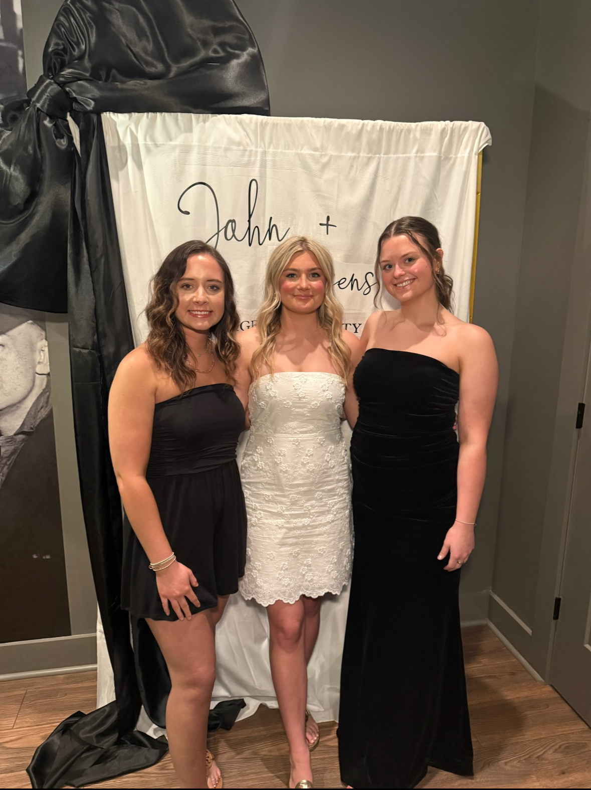

Hobbies and Interests
Music & Podcasts
I love music, especially country, with Jason Aldean, Dylan Scott, Lainey Wilson, Ella Langley, and Forrest Frank being some of my top favorites. I also enjoy listening to podcasts like The Cultural Apothecary and Bryce Crawford, which keep me motivated and inspired.
Movies & Shows
When I want to relax, I love a good movie or series. How to Lose a Guy in 10 Days is one of my all-time favorite movies, and Gossip Girl is a show I can always rewatch.
Sports & Activities
I really enjoy baseball season, especially going to games and soaking up the excitement of the ballpark. Sports are also something I love watching with friends and family—it’s a fun way to connect. My Fiance used to play baseball as well as my cousin and I loved going to the games to watch them play. My younger cousin now plays baseball and football and we love to go as a family to support him and the teams as much as we can.
Lifestyle & Healthy Living
I’ve grown passionate about health and wellness, from choosing non-toxic products to making better everyday habits. I love finding new ways to live healthier and believe this will always be an important part of my life.
Shopping, Coffee, & Exploring
I enjoy shopping, especially thrifting and finding hidden gems. I also love exploring Chattanooga—trying new restaurants, activities, and coffee shops. Coffee is definitely one of my favorite parts of any adventure.
Outdoors & Time with Loved Ones
Spending time outdoors is another hobby of mine, especially going to the lake, hanging out on the boat, and taking my dog Lady with me. Some of my favorite memories also come from spending time with my fiancé, family, and best friends—whether we’re playing games, having girls’ days, or just enjoying time together.
